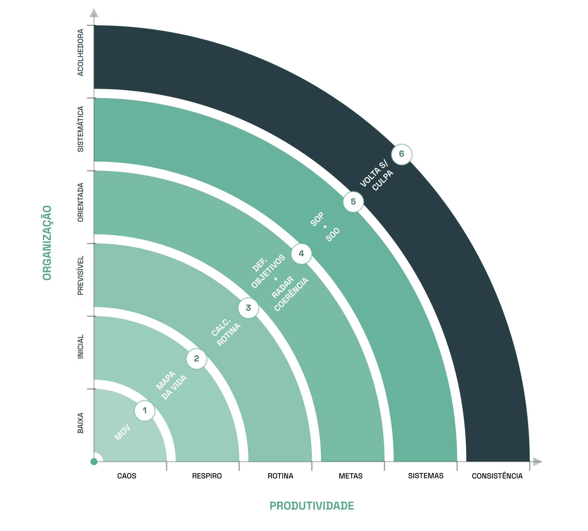
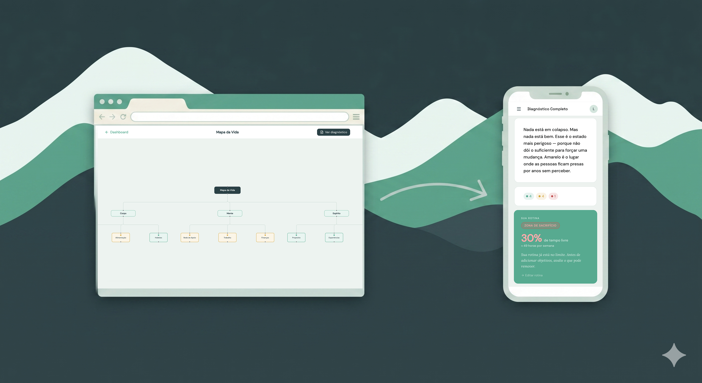
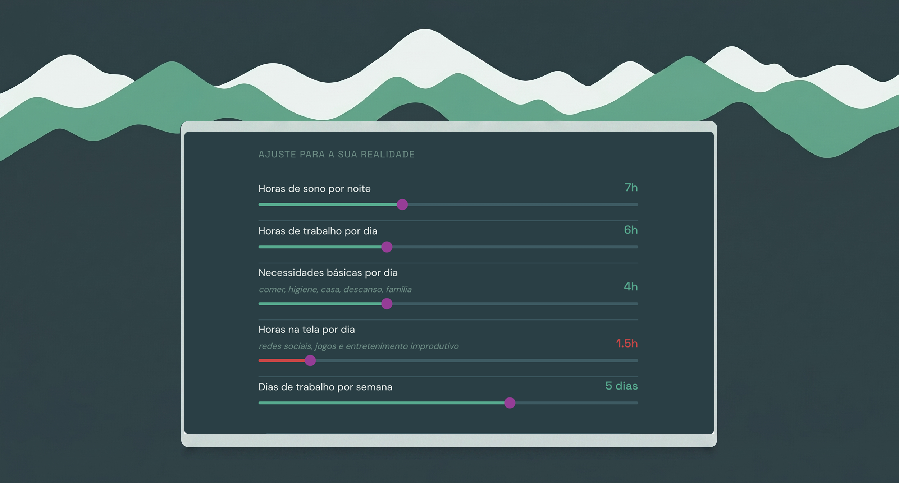
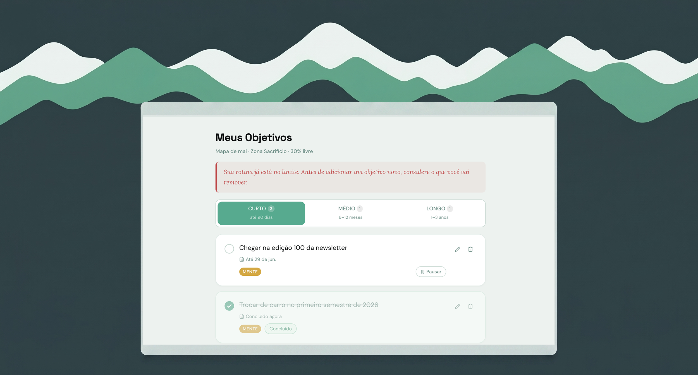
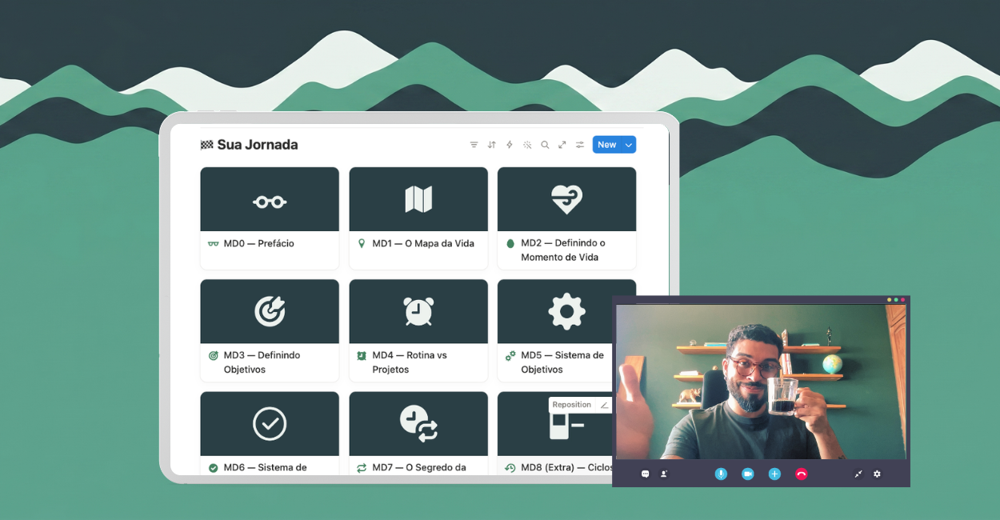

Tenha as ferramentas e sistemas para sustentar os seus planos nos dias difíceis e avance com pessoas que estão na mesma jornada.
SE INSCREVA NA TURMA 2Suzana de Miranda · Founder, Enableurs
"O conteúdo já foi tão rico que hoje voltei a correr, o que não conseguia fazer desde fevereiro, praticamente, quando abri mão de muita coisa por conta do trabalho."
"A aula de ontem me fez procurar a personal de novo, pra tentar malhar mesmo sem personal presente em cada treino."
Um framework construído com mais de 10 anos de estudo e consistência

mapa da vida + calculadora de rotina + definidor de objetivos + aulas
essa é a primeira coisa que você faz na trilha. baseado nos estudos das bluezones ele avalia 3 pilares fundamentais: corpo, mente e espírito. tem coragem?
→ você enxerga onde vai chegar no futuro se continuar assim.
você descobre onde o seu tempo realmente tem para definir os seus objetivos baseado na sua rotina real - e não na rotina dos outros..
→ entenda se você está numa zona de sacrifício ou privilégio.
crie e acompanhe os seus objetivos de acordo com a sua rotina real e pare de abadonar seus projetos no meio do caminho.
→ não engavete mais seus projetos depois de 2 semanas.
para aplicar a jornada e construir o seu sistema de organização pessoal.
→ acesse quando quiser para revisar o método
3 encontros durante a trilha com orientação direta
avance com pessoas na mesma jornada em desafios coletivos
acesse no seu ritmo, no horário que funciona para você
se conecte com pessoas na mesma jornada que você
guias técnicos e profundos sobre produtividade disponíveis por 1 ano
aulas variadas que acompanham cada fase da sua jornada.
"você sabe o que precisa fazer — só não consegue manter."
Você quer aprender tudo ao mesmo tempo. Mas, no fim, não foca em nada, porque a rotina atropela as suas demandas.
"você é organizado no trabalho. sua vida pessoal é um caos."
Se você sempre prioriza o trabalho em detrimento da vida pessoal, saiba que não está só. Aqui, você encontra as ferramentas para abrir espaço na agenda e viver mais, sem culpa.
"você não sabe para onde está indo — e cada dia parece igual ao anterior."
Seja porque você chegou ao seu objetivo, ou porque se sente perdido tentando encontrar o próximo passo, o Mapa da Vida e a Trilha guiam você rumo ao seu próximo marco — seja ele grande ou pequeno
"Foi um misto de terapia + aulas de faculdade + cervejinha depois do trabalho. Eram todos conceitos conhecidos que quando colocados cada um no seu lugar na trilha reduz muito a complexidade de entendê-los e executar."
"Essa semana tá sendo bem difícil. Os pontos sobre autoperdão e não se cobrar tanto estão me ajudando muito. Ter estado nessa jornada e ter acesso a esses materiais com certeza já são um mega passo na vida que eu quero construir."
Em 2020 eu tocava três empregos. Era mega organizado no trabalho e um caos na vida pessoal. Comecei a ter problemas de saúde e tive o famoso burnout. Algo estava completamente fora do lugar.
Eu só olhava para trabalho. Mudei a minha realidade financeira com muito trampo e apesar disso ainda tinha muito medo de voltar a não ter grana. Resultado? Mais trabalho.
Meu corpo e minha cabeça me obrigaram a parar. Percebi que precisava considerar outros pilares na minha vida.
O Mapa da Vida nasceu ai. Depois de ler um estudo sobre longevidade vi que meu lifestyle estava me matando (literalmente). Criei um esboço e comecei a compartilhar (muita gente adorou e passou a usar também). Mas mapear não era suficiente. Eu sempre criava objetivos demais e parava meus projetos pela metade.
Percebi que precisava de um critério para decidir o que fazia sentido colocar e tirar da minha vida. Vieram a Calculadora de Rotina e o Definidor de Objetivos.
Quando as ferramentas se conectaram me percebi bem mais consistente e em paz. Um alívio para quem, quase sempre, se sentia frustrado.
Refleti sobre o motivo da mudança e percebi que: eu estava mais consistente porque tinha aprendido a construir meu próprio método de organização pessoal..
Hoje apesar da rotina corrida como executivo no mercado de entretenimento consigo cuidar da saúde, colocar o trabalho no lugar do trabalho e viver mais, sem culpa.
É essa paz que quero te ensinar a ter na Trilha da Produtividade.
R$799,99
R$497,00
ou 12x de R$41,66
"Essa semana, apesar de ter sido muito corrida, parece que alinhei mais as expectativas comigo mesma. A carga mental foi muito menor."
sem estresse. se em 14 dias você sentir que não é para você, devolvemos tudo — sem burocracia, sem pergunta.
tem dúvida antes de decidir? me manda uma mensagem.